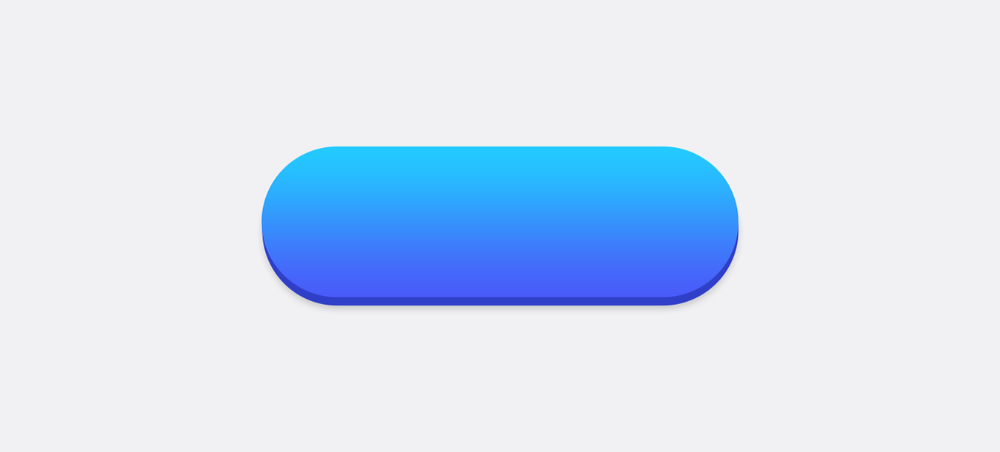

Building Internal Tools to Streamline TrueChoice's App Design Process
Intro | The Script | CSS Buttons | Sharing | Results
Intro
What is TrueChoice?
TrueChoice is an analytics company that builds web apps and provides data-based consulting for big companies. Our survey apps match — or feel like a natural extension of — our clients' brands. Here’s the simplified progression of a client project at TrueChoice:
From start to finish, these projects take a couple months, max, and our very small team manages multiple projects at once. To handle our workload, our designers and front-end developers build our apps on top of a proprietary UI framework called Platform.

The Problem:
So, we're building apps on incredibly tight deadlines, usually working on multiple projects at once. To meet these deadlines, a full half of our design team is dedicated solely to building client apps. And the process they had to go through to deliver these apps had inefficiencies that made it tough for them to deliver apps on time without working overtime.

I made it my mission to identify and fix some of these inefficiencies to free up time and energy for our App Dev team.
My Role:
- I was the the sole person working on this project. Done in downtime between more time-sensitive projects.
- The project was my own initiative.
- I wrote all the code for the project, but my more important contribution was identifying an area of weakness and working with the rest of the design team to build a solution that worked for them.
The Photoshop ⟶ LESS Script:
Let's take a look at the first inefficiency I tackled — the old process of writing LESS for a new application. Here's how the process was done before I developed a tool to help out.
A designer must enter the values for a large number of LESS variables into an Excel spreadsheet, which then gets imported and turned into real LESS variable declarations during the build process. The values in the LESS variables propagate to the various elements of the application. Originally, this was meant to be an easy interface for designers without coding experience to customize our apps. However, the the number of LESS variables has grown over the years to match the growing customizability of the Platform. There are now hundreds of LESS variables. This allows for a wide degree of customization, but requires a lot of time from the designer to fill out. Perhaps a couple hours of grabbing values with a color picker, typing in values, forgetting what a certain div is called, building, checking the build, messing up, going back, forgetting which variable corresponds to which element of the template, slamming your fist through your computer monitor, etc.

As we took on ever-more clients in ever-shorter timespans, slow manual processes like this became more of a burden on our team. There had to be a better way to do it. I could tell that there was a problem, and I saw an oportunity to invent a tool to fix.
Requirements
I spoke with the App Dev team to understand the pain points and establish requirements for this tool:
- Has to be in Photoshop. All our templates and component libraries are built in Photoshop. All our existing toolchains use it. To ensure parity between developer and designer machines, we all use Windows, so we wouldn't be switching to Sketch anytime soon. Whatever I built, it had to interface with Photoshop.
- No more going through PSDs with the color picker and marquee tool grabbing heights, widths, colors, and border radii.
- Remove the need for an excel sheet at all. Go straight from Photoshop to LESS.
Wrangling the Photoshop API
Next, I researched how to build a tool like this for Photoshop. I read esoteric old Photoshop scripting tutorials from Photoshop CS2. I dived into the arcana of the poorly documented Photoshop API. I perused old StackOverflow posts from half a decade ago.
A good API requires two things: Good documentation and useful abstractions. The Photoshop API has neither.
Easy things were hard. Doing something as simple as getting the color of a layer was bafflingly complex and opaque. So, my first step was to make a set of functions that actually met the script's basic needs. I built my own layer of abstraction on top of the messy Photoshop API and walled it off.

Then, I used my helpful layer of functions to build a script that systematically combs the layers of one of our Photoshop documents, going into smart objects, extracting relevant styles, and automatically constructing a LESS file (no excel sheet needed). After about a week, I had a minimum viable product. I invited the other designers to start using it to generate the LESS for real client builds. Letting them get their hands on it early was instructive. They told me what worked for them, what didn't, and helped prioritize how to expand the script's capabilities. Over the course of a few more weeks of part-time work, I was able to flesh out the functionality of the script with confidence that I was building something that was helpful to my teammates.
Now, we use the script for every build. It can do what a designer can do by hand — except error-free — in 5 minutes instead of an hour. It saves AppDev a few hours of tedium a every week. The is a modest improvement, but it laid the groundwork for improvements to come...

Building a Flexible and Designer-Friendly CSS Button Framework:
A lot of designers are perfectionists. I think most of us have stumbled across a design decision that has made our blood boil. We care. We’re passionate about good processes and good results. As a result, we are sometimes overly-harsh when we encounter bad design. I know I’m guilty of it. Earlier in this post I was pretty hard on the Photoshop API. The truth is that bad design doesn’t exist in a vacuum. Decisions that make sense at the time don’t always age well. Designers get moved to other products, budgets get cut, deadlines get pushed up. Most modern, relatively well-designed systems made by passionate intelligent people will have a few odd artifacts of older design decisions hanging off of them. This is not the exception — it’s the rule. That’s why it’s important to approach what you might consider “bad design” with compassion and openness. Usually, the cause is not malice or incompetence, but a lack of resources.
And that leads us to the second big inefficiency in our App Dev process. This is a difficult confession to put down on paper (pixels, whatever): when I started at TrueChoice Solutions, we did not have CSS buttons in our applications. We drew every button, drew every downstate for every button, and put all those assets onto a sprite sheet.
When I first heard this, I had to work hard to be open-minded about it. It would have been easy to assume the worst. What kind of early-aughts flash-era nonsense was this? Surely this was a bad implementation, had always been a bad implementation, and was probably a design smell — the first hint that our Platform was a Lovecraftian tangle of a UI framework that would drive any designer who touched it to madness.
Instead, I did my research. I found that our Platform was built by a team of passionate developers and used by a team of equally passionate designers to meet our client’s needs. I gathered the necessary context to understand why a decision like drawn buttons was originally made. How did we get here? Is this decision still serving us well? Here’s what I found:
Platform needs to facilitate a wide variety of visual styles to meet our client’s branding needs. Big companies that care about design require consistency across their experiences, even if those experiences are built by a third party. We believe in flexibility above almost everything, and what’s more flexible than drawing? Go back to the Ancient Times (2012ish). Skeumorphic design was ascendant; companies were building products on top of Flash; TrueChoice Solutions served a fraction of the clients that we do today. In the past, we had time and cause to draw our buttons. In the past, it made sense.
But there are many problems with non-CSS buttons:
- They are not responsive to different lengths of content.
- Time and manual effort must be put into creating downstates.
- It’s hard to keep button size, shape, and behavior consistent across half a different button-types in any given app.
- It’s slow to change button styles if the client comes back with feedback. You have to re-draw.
- Drawn buttons necessitate large sprite sheets, which slows down load-times.
It worked for a while, but it was making it hard for us to scale. This was an opportunity to improve.
And there were a lot of questions about how to do it right.
- How do I respect the history of us supporting a literally endless level of customization?
- What level of customization do we really need?
- What variables do I need to expose to the designer?
- What can I automate or standardize to free up the designer's brain space?
- How do I balance simplicity with our clients' actual needs?
The whole original reason for the LESS spreadsheet is that designers shouldn’t have to write production-ready CSS on tight turnarounds. Any solution I came up with couldn’t require a designer to spend a ton of time writing styles for buttons. My goal was to save time and reduce errors, not waste time and create errors.
I was able to leverage my PSD ⟶ LESS script to auto-generate the CSS styles for buttons. To reassure our design team that we weren’t sacrificing much flexibility, I made the script robust enough that the styles supported could mimic all the buttons we’d done in our recent apps to clients. Their faces lit up when I showed them. I was heading in the right direction.
Sharing
The next challenge was figuring out what I should expose to the designer and what should be automatic. I struggled to figure this out on my own. Then I realized, I could just ask our app dev designers! We worked together to figure out the right level of flexibility. Ultimately, we decided that all styling of the buttons would be automatic, except for button’s downstate behavior, which would be chosen by the designer by setting a handful of LESS variables. It was interesting to see how just a few variables could be mixed and matched to create complex downstates.
Next, I established the hierarchy for all buttons in our application. The old process involved the designer drawing each button in photoshop and deciding on the spot what its styles should be. Now, the styles from just a few buttons could propagate to all other buttons in the app, empowering designers to spend their time making decisions that matter instead of manually reproducing visual hierarchy for every application.
I built a demo that showed this hierarchy:
- Welcome
- Primary
- Secondary
- Tertiary
- Help
I passed off the button demos to our Frontend Team. Over the next week, I worked closely with the team to ensure this change was implemented correctly. A week later, it was built. Now, we use CSS buttons in every application we deploy.
All my work is like Indiana Jones swapping out the bag of sand for the statue. That's what it's like when you design the new thing while you use the old thing to build apps. And as soon as you switch to the new thing, it starts getting used to build apps. That's internal tools.
Results:
50%
OF ASSET PREPARATION TIME SAVED / BUILD
26
DAYS OF DESIGNER TIME SAVED ANNUALLY
Here's some feedback from my coworkers who've seen these tools in action:
This is really well thought-out.
These tools are becoming an essential part of our build pipeline.
We're saving so much time!